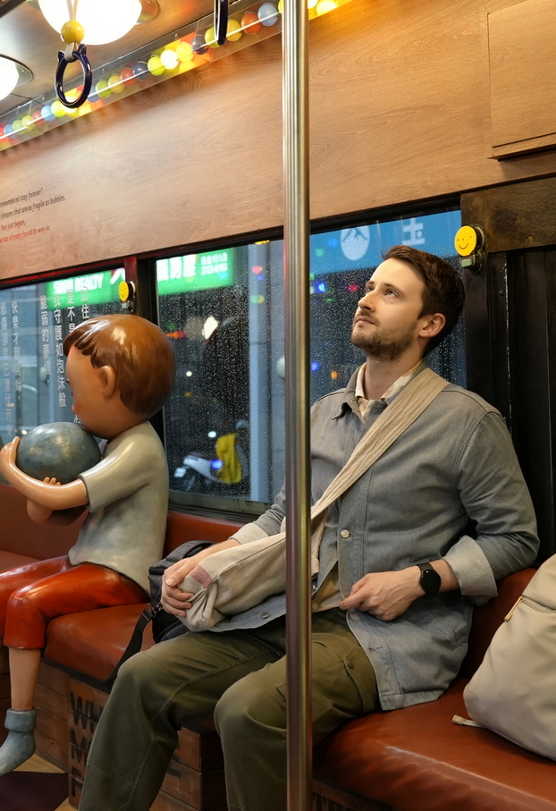

MSc Interactive Media Technology
Software engineer who's passionate about sustainability and technology
I'm a software engineer from Sweden with a MSc in Interactive Media
Technology (Master civ. Engineer degree) from The Royal Institute of Technology (KTH) in Sweden.
In my studies I've pursued sustainability and technology as my main interests. I design technology
to improve lives, with experience in web and backend development, UX, graphic design, and big data. I’m
passionate about ethical, sustainable tech that makes a positive impact.
Have a look at my skills and some of the projects I've worked on below:
| Company | Role & Period | Description |
|---|---|---|
| Lime Technologies | Application Consultant 2023–2024 |
Customized CRM solutions using Python, TypeScript, CSS, SQL, and VBA.
|
| KTH | Mentor 2022 |
|
| KTH | Teaching Assistant 2021–2022 |
|